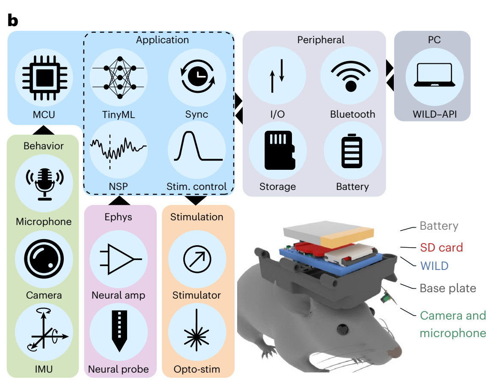
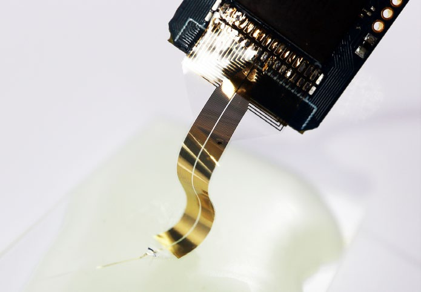
Cornell University | Department of Neurobiology and Behavior
Zifang "Frank" Zhao
Neural interfaces and closed-loop bioelectronics for systems neuroscience.
Publications
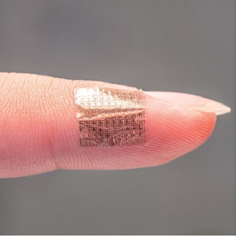
Event-based sensors for closed-loop neurostimulation
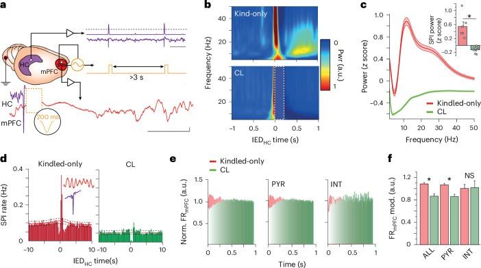
Closed-loop stimulation and focal epilepsy
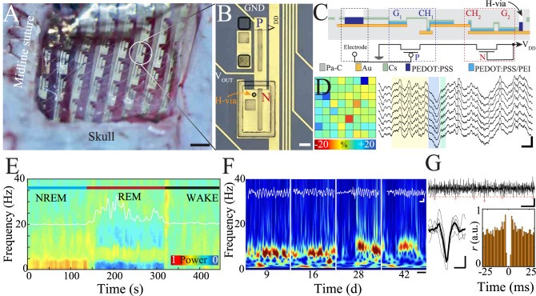
Conformable organic transistor circuits
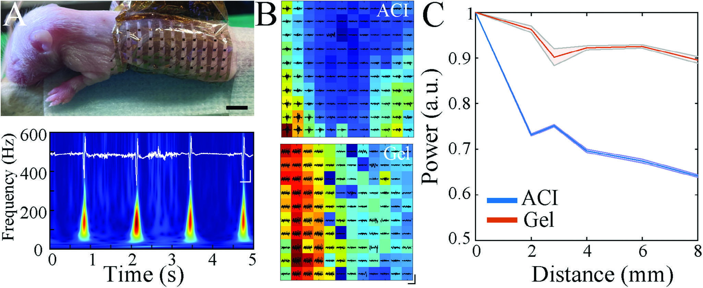
High-resolution epidermal interfaces
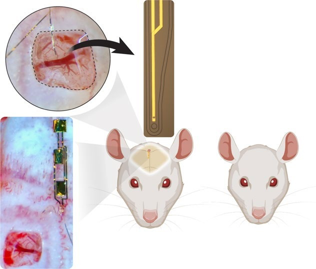
Conformable organic biointerfaces
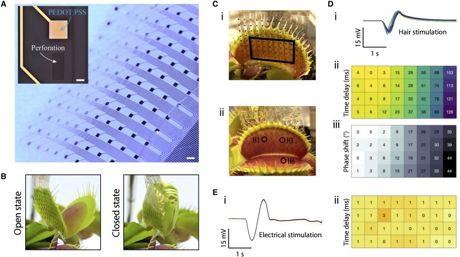
Plant electrophysiology in the Venus flytrap
Large-scale closed-loop interrogation of neural circuits
Light-driven peripheral nerve stimulation
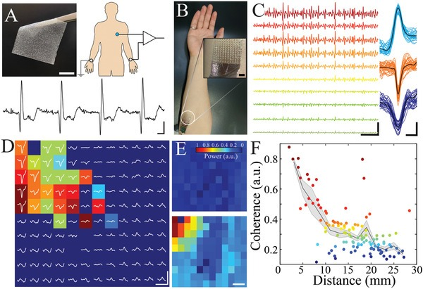
Anisotropic ion-conducting composites
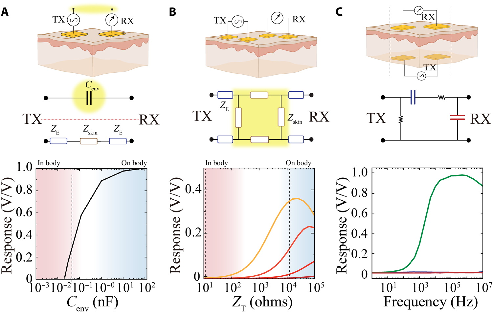
Ionic communication through tissue
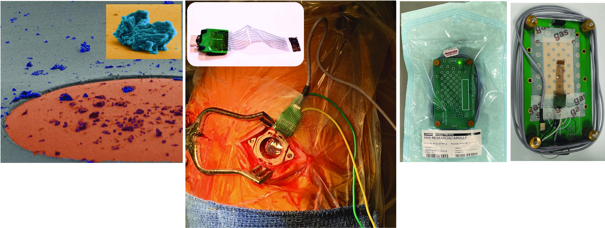
Single-neuron organic interfaces
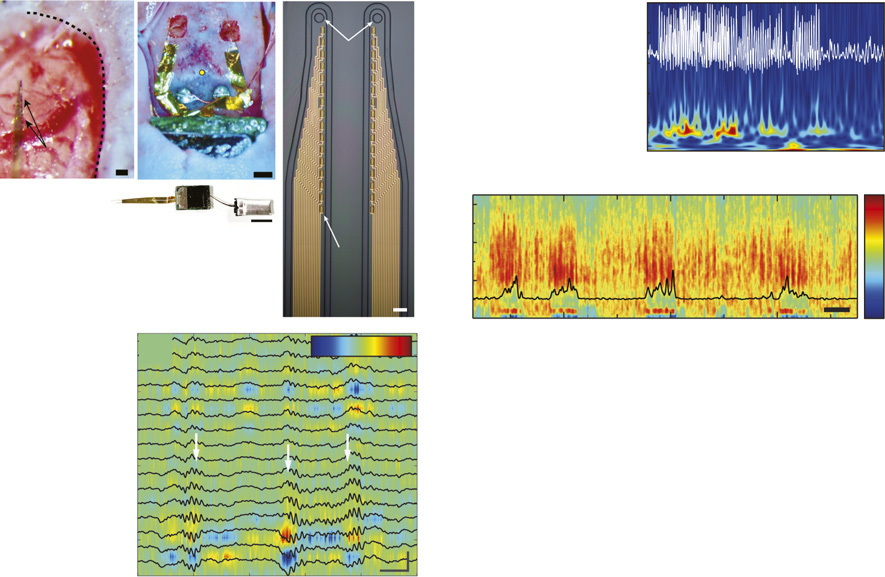
Responsive implantable neuroelectronics
Translational neuroelectronics
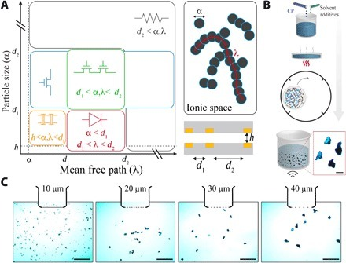
Mixed-conducting composites for soft electronics
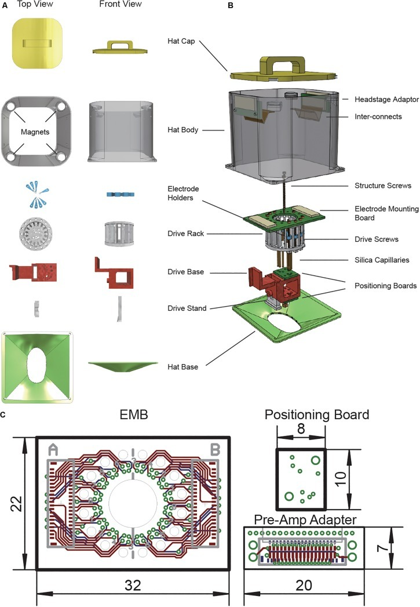
3D-printed multi-drive recording system
Electrophysiological signature of pain
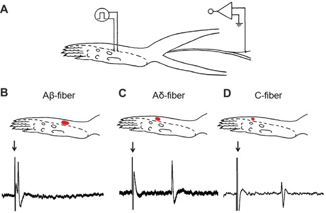
Calcium channels and neuropathic pain
Mapping information in local field potentials
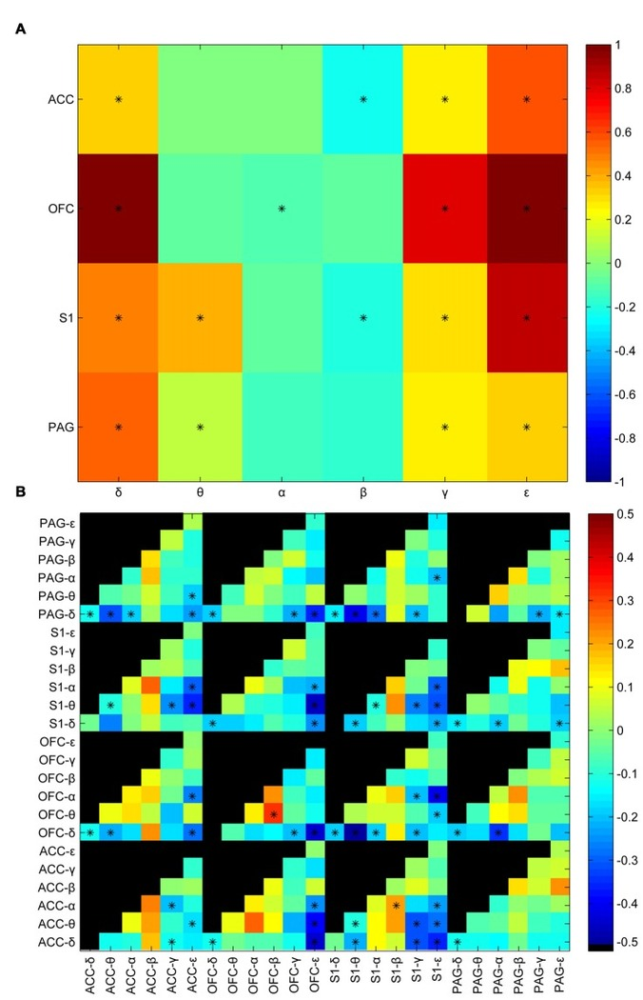
Neural oscillations during laser-induced nociception
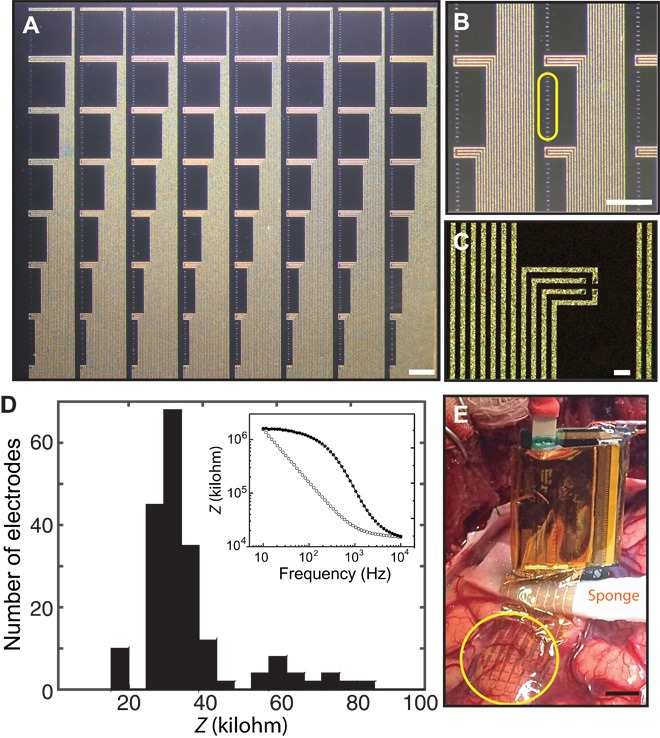